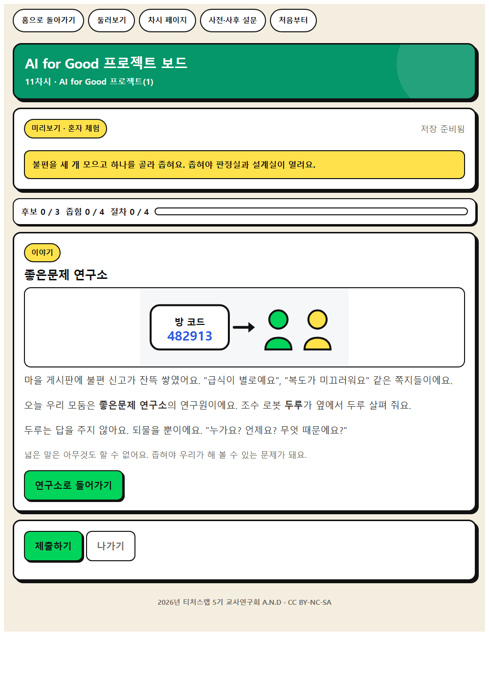
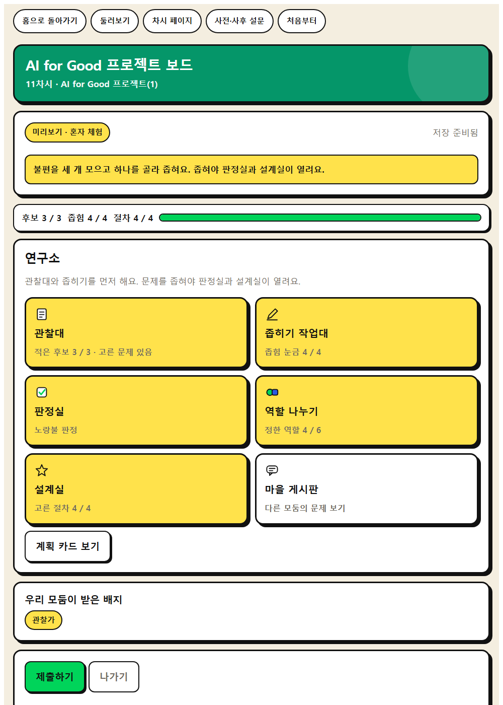
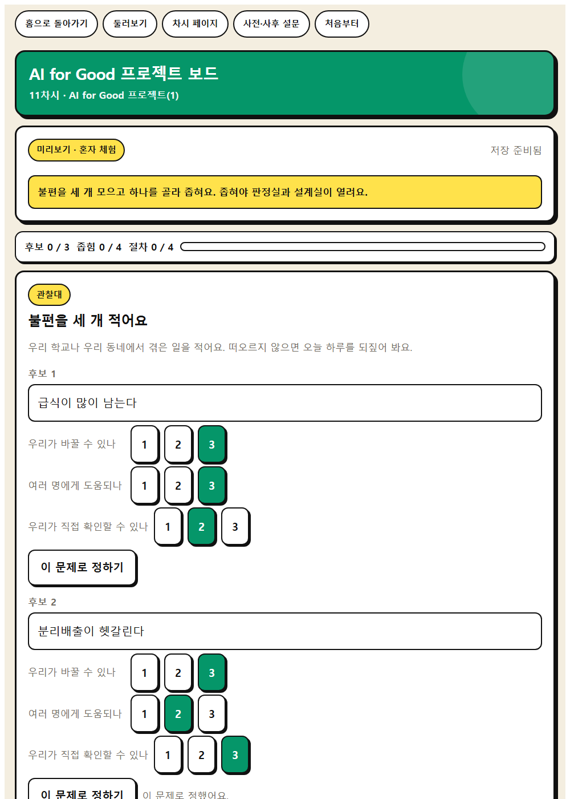
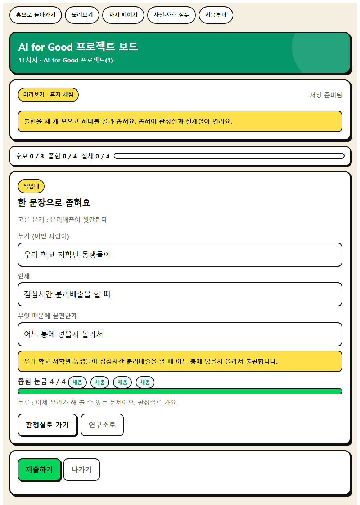
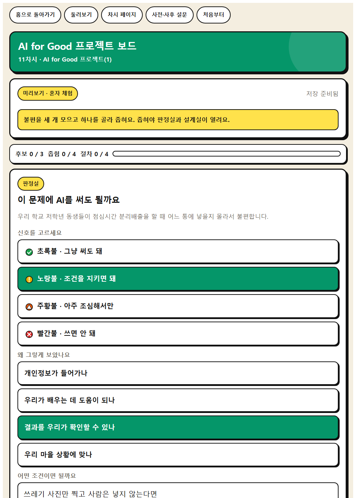
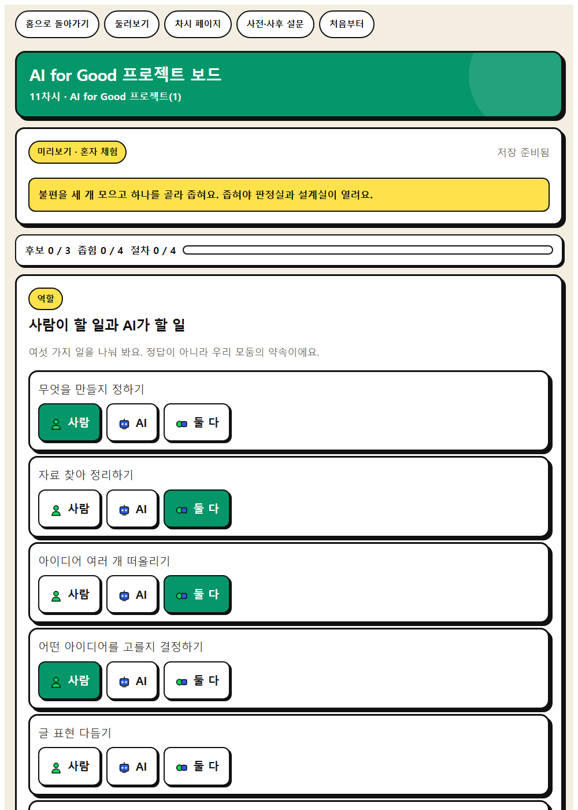
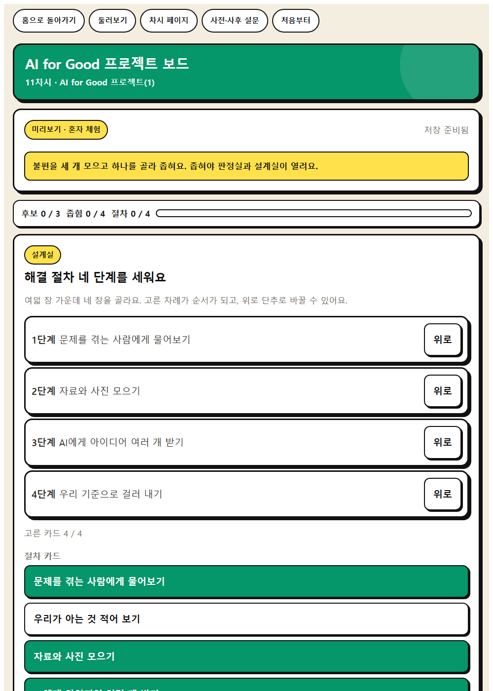

WISE 실천 · 11차시
AI for Good 프로젝트 보드
모둠이 고른 문제를 등록하고 6차시 신호등 기준으로 AI 활용 적합성을 판단한 뒤 해결 절차 4단계를 설계한다.
이 앱으로 무엇을 하나
우리 생활과 지역의 문제를 찾고 AI로 도울 수 있는지 판단해 봅시다.
문제해결 사고맥락적 사고통합적 사고
배우는 것
- 문제해결 사고 · 문제를 분석해 AI 활용 적합성을 판단하고 해결 절차를 설계하기
- 맥락적 사고 · AI가 제안한 해결책이 우리 상황에 맞는지 검토하고 조정하기
- AI적정활용 구성요소 · ① 교육목적 정합성
- AI적정활용 구성요소 · ⑧ 맥락 적합성과 형평성
체험하는 법 (세 걸음)
- 혼자 먼저 해 본다. 앱을 열고 닉네임만 넣은 뒤 둘러보기를 누른다. 저장되지 않으니 마음껏 눌러 본다. 웹앱 열기
- 수업 직전에 방을 만든다. 앱에서 선생님 화면을 누르고 비밀번호 네 자리를 정한 뒤 새 방 만들기를 누른다. 여섯 자리 방 번호가 나온다. 칠판에 적는다.
- 학생이 들어온다. 같은 주소를 열어 방 번호와 닉네임, 나만 아는 숫자 네 자리를 넣는다. 제출하면 선생님 화면에 바로 모인다.
기기가 모자라면 모둠에 한 대로 함께 하고, 없으면 웹앱 없이 종이 설계도에 4단계를 그리고, 모둠 발표로 공유한다.
화면 미리 보기
실제 앱 화면입니다. 눌러서 크게 볼 수 있습니다.








수업 흐름과 발문
도입 · 5분
동기 유발
동기 유발
- 학교나 마을에서 불편했던 일을 하나씩 떠올려 봅시다.
- 이런 문제를 AI가 도와줄 수 있을까요?
도입 · 5분
학습 문제 확인
학습 문제 확인
- 우리 생활과 지역의 문제를 찾고 AI로 도울 수 있는지 판단해 봅시다.
전개 · 30분
[활동 1] 문제 찾고 좁히기
[활동 1] 문제 찾고 좁히기
- 모둠에서 문제를 3개 모으고 가장 해 보고 싶은 하나를 골라 봅시다.
- 누가, 언제, 무엇 때문에 불편한지 한 문장으로 적어 봅시다.
전개 · 30분
[활동 2] AI 활용 적합성 판단하기
[활동 2] AI 활용 적합성 판단하기
- 6차시 신호등 기준으로 이 문제에 AI를 쓰는 것은 몇 번 신호일까요?
- AI에게 맡길 일과 우리가 할 일을 나눠 봅시다.
전개 · 30분
[활동 3] 해결 절차 설계하기
[활동 3] 해결 절차 설계하기
- 해결 순서를 네 단계로 그려 봅시다.
정리 · 5분
배움 정리
배움 정리
- 우리 모둠 계획에서 사람이 꼭 해야 할 일은 무엇인가요?
정리 · 5분
다음 차시 예고
다음 차시 예고
- 다음 시간에는 계획대로 만들어 발표해 봅시다.
함께 보면 좋은 자료
- 자료 학생주도로 만들어 가는 초등 융합프로젝트수업 실천사례 경기도교육청
5학년 행복한 공감 히어로 되기 사례를 설계 틀로 삼아 우리 마을 문제를 고르고 해결 방법을 계획한다.
- 자료 인공지능과 데이터 교재 · 소프트웨어야 놀자 네이버 커넥트재단
인공지능으로 쓰레기 문제 해결하기 같은 초등 챕터를 보여 주고 학생이 프로젝트 주제를 정하게 한다.
- 자료 초등 5~6 탄소중립 학교 만들기 기후위기 대응 교재 국가환경교육센터(환경부)
탄소중립 실천하기 부분을 발췌해 우리 학교에서 고칠 수 있는 문제를 찾고 AI를 어디에 붙일지 설계한다.
- 자료 EBS 소프트웨어·인공지능 교육 (이솦)
초등용 AI 학습 콘텐츠와 수업 영상을 무료로 받을 수 있다.
- 영상 EBS AI 단추
학년별 AI 개념 영상. 도입 자료로 한두 편 골라 쓴다.
- 영상 EBS Learning 유튜브 채널
채널 안에서 차시 주제로 검색해 최신 영상을 고른다.
- 뉴스 대한민국 정책브리핑
AI 정책과 학교 현장 기사. 사실 확인이 된 자료를 인용한다.